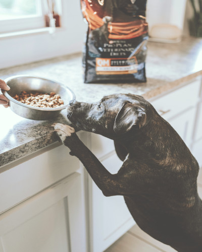
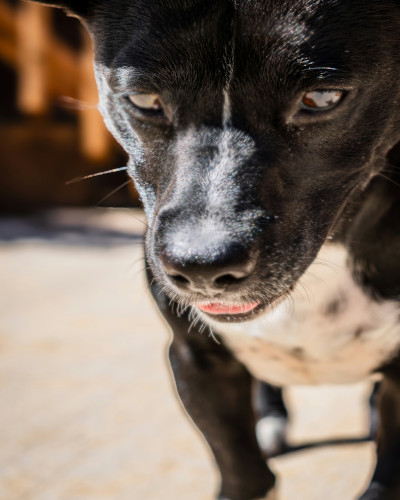
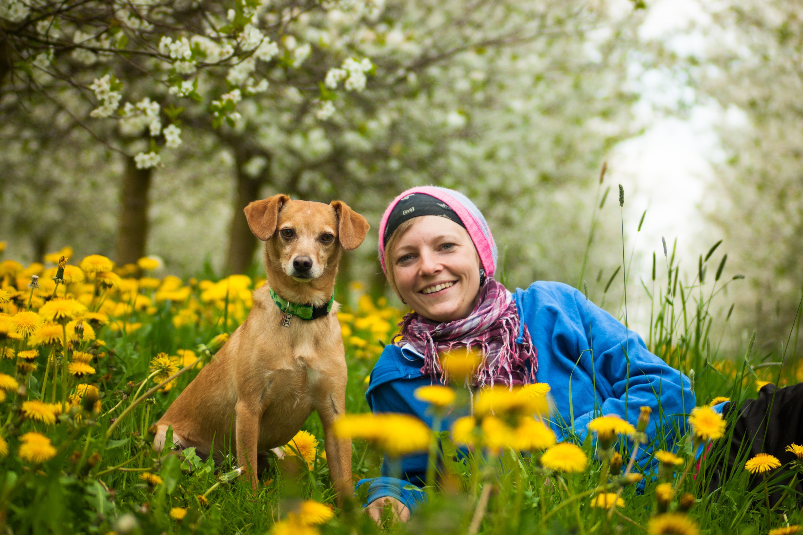

Nutrition
Promoting a healthy and happy lifestyle through balanced canine nutrition.
Promoting a healthy and happy lifestyle through balanced canine nutrition.

Sourcing high-quality ingredients to ensure optimal health for your pet.

Understanding dietary requirements based on specific breed characteristics.

A balanced diet rich in essential vitamins, proteins, and healthy fats is crucial for your dog's digestion, immune system, and long-term vitality.